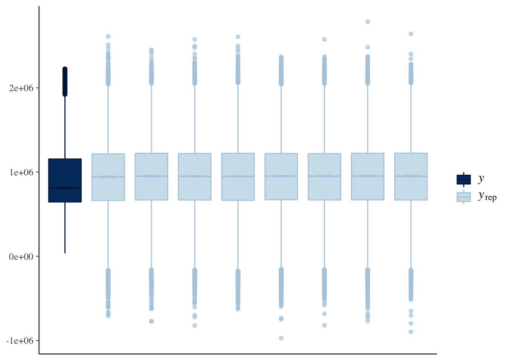

2 Data Preparation and Modelling
To determine likelihood of property price response around access to services and business districts the Data modelling was limited to distance from CBD and access to services (schools and train stations). The summary statistics and results for the adjusted linear model are at Annex 1
2.1 Data Preparation
The Data set used for this modelling is the same Data that was used for the original linear model with outliers removed. This offered a Data set of more than 47 000 observations. This was further broken into a training and testing Data set with a ratio of 80/20.
2.2 Modelling
The model used was a Bayesian Generalized Linear model using Markov Chain Monte Carlo (MCMC) to develop the inference. The method for modelling and model selection was to incorporate the different levels of priors as part of the model selection process then assess the model. Three different kinds of priors were used to select the model:
- Flat Priors
- Weakly Informative Priors, and
- Informative Priors
The selection and details around these priors was taken from the initial linear regression modelling completed. These results can be found at Annex 1.
Firstly we will address the Flat Priors. The default priors in rstanarm are designed to be weakly informative. This means that the priors have to be set to NULL in rstanarm to get flat priors. It is seldom useful to use flat priors unless there is a requirement to refer to the parameterization-invariant Jefferys prior.
The Flat Priors model results are below.
##
## Model Info:
## function: stan_glm
## family: gaussian [identity]
## formula: price ~ distance_from_CBD + distance_from_closest_private_school +
## distance_from_closest_station + distance_from_closest_public_school
## algorithm: sampling
## sample: 4000 (posterior sample size)
## priors: see help('prior_summary')
## observations: 38394
## predictors: 5
##
## Estimates:
## mean sd 10% 50%
## (Intercept) 1227592.4 3803.1 1222823.4 1227640.6
## distance_from_CBD -9839.0 81.1 -9939.7 -9839.8
## distance_from_closest_private_school -5671.3 1631.4 -7769.1 -5684.0
## distance_from_closest_station 16542.3 638.4 15710.1 16556.1
## distance_from_closest_public_school 58871.0 3869.9 53866.3 58839.3
## sigma 340969.6 1215.6 339377.4 340978.6
## 90%
## (Intercept) 1232436.8
## distance_from_CBD -9735.0
## distance_from_closest_private_school -3548.8
## distance_from_closest_station 17342.9
## distance_from_closest_public_school 63807.6
## sigma 342539.3
##
## Fit Diagnostics:
## mean sd 10% 50% 90%
## mean_PPD 939676.3 2475.2 936512.7 939652.5 942855.1
##
## The mean_ppd is the sample average posterior predictive distribution of the outcome variable (for details see help('summary.stanreg')).
##
## MCMC diagnostics
## mcse Rhat n_eff
## (Intercept) 51.9 1.0 5360
## distance_from_CBD 1.3 1.0 4202
## distance_from_closest_private_school 28.7 1.0 3234
## distance_from_closest_station 9.8 1.0 4256
## distance_from_closest_public_school 60.9 1.0 4041
## sigma 13.8 1.0 7738
## mean_PPD 38.7 1.0 4092
## log-posterior 0.0 1.0 1771
##
## For each parameter, mcse is Monte Carlo standard error, n_eff is a crude measure of effective sample size, and Rhat is the potential scale reduction factor on split chains (at convergence Rhat=1).## 5% 95%
## (Intercept) 1221484.49 1233769.80
## distance_from_CBD -9970.64 -9704.66
## distance_from_closest_private_school -8351.27 -2986.75
## distance_from_closest_station 15465.43 17575.46
## distance_from_closest_public_school 52477.29 65170.01
## sigma 338928.34 342948.57The efficacy of the model is visually represented in the charts below.


The visual representations above represent the Linear Model with flat priors. This was done for all three models, flat, weak and informative priors and importantly all models converged and had R-hat values of 1 or less across all predictors. convergence of draws is below.
The four models were then compared using the leave one out function (LOO) in rstanarm. This function will test the models to determine which priors applied to the model will offer the best result. It should be noted that all MCMC converged on all models as a measure of a sound model. The trace plot below visualises this.
2.3 Model Selection
The model selection involves comparing the different models that have used the three different priors.
| .rownames | elpd_diff | se_diff | elpd_loo | se_elpd_loo | p_loo | se_p_loo | looic | se_looic |
|---|---|---|---|---|---|---|---|---|
| glm_price_weak | 0.0000000 | 0.0000000 | -543602.9 | 161.3315 | 7.916135 | 0.5056034 | 1087206 | 322.6630 |
| glm_price_informative | -0.0081569 | 0.0198058 | -543602.9 | 161.3302 | 7.910412 | 0.5098467 | 1087206 | 322.6603 |
| glm_price_flat | -0.0263548 | 0.0468514 | -543603.0 | 161.3322 | 7.925820 | 0.5089566 | 1087206 | 322.6644 |
The LOO information criterion (LOOIC) is used in a similar manner to the frequentist statistics measure of Akaike Information Criterion (AIC). Based on the results above it can be seen that the models all produce good results with the ‘weak’ informative prior offering the best results. This will be the model we will continue to develop. LOO Log-predictive density values to find observations that are difficult to predict (Hoff 2009; Gabry and Goodrich, n.d.).
2.3.0.1 Posterior Predictive Checking {PPC}
Bayesian models with proper priors are generative models as such we need to check the priors used in the model. This is done by assessing the priors based on the marginal distribution of the data - this reflects the interplay between the prior distribution on the parameters and the likelihood (Gelman and Gelman 2013).

Visually the model appears to be underestimating on the posterior predictive check in the line graph above. Further investigation with the box plot highlights that the higher values from the original data set have influenced the posteriors. The overall fit for the model is fair, the shape approximates the original Data but there is an underestimation in the predicted price based on the model variables.
This is a good time to raise the issue around the interaction between priors and posterior results. Recall that Bayesian modelling methods are useful for small data sets or data sets with missing data. With a small data set the predictions will approach the priors, as the number of observations increases then the predictions will approach the posterior results.
Another useful check is to consider the posterior against the prior by parameter.

## # Description of Posterior Distributions
##
## Parameter | Median | 89% CI | pd | 89% ROPE | % in ROPE | Rhat | ESS
## -------------------------------------------------------------------------------------------------------------------------------------------
## (Intercept) | 1.228e+06 | [ 1.221e+06, 1.234e+06] | 1 | [-40906.361, 40906.361] | 0 | 1.000 | 4104.447
## distance_from_CBD | -9837.504 | [ -9962.828, -9704.404] | 1 | [-40906.361, 40906.361] | 100 | 0.999 | 5417.531
## distance_from_closest_private_school | -5635.805 | [ -8429.008, -3286.470] | 1 | [-40906.361, 40906.361] | 100 | 1.000 | 4400.437
## distance_from_closest_station | 16528.637 | [ 15527.156, 17573.042] | 1 | [-40906.361, 40906.361] | 100 | 0.999 | 5234.325
## distance_from_closest_public_school | 58703.979 | [ 52491.160, 64855.757] | 1 | [-40906.361, 40906.361] | 0 | 0.999 | 5518.889The results above allow us to assess the centrality (median), the uncertainty (the credible interval, CI), the effect existence and effective significance - all of these values are appropriate for the model.
Based on the results above from the model we can offer a 90% likelihood that the property price will be between 1.22mil and 1.23mil , the mean of 1.22mil. This seems a little unrealistic noting variance in prices between Sydney City and the outer suburbs. In order to further refine this model we will break it down by postcode to determine a more specific estimate that will be useful to future planners.
After further preparing the data and running a bayesian model for each of the post codes the results were varied. Some of the postcodes only had a few observations - 3 or 4 and as such the results from the model weren’t reliable. To demonstrate this the following postcodes were taken at random to determine effectiveness of the modelling, 2095, 2099, 2147, 2170, 2231. These postcodes are generally in the likley development areas for the Greater Sydney Region Commission.
Postcode 2095.
## [[1]]
## stan_glm
## family: gaussian [identity]
## formula: price ~ distance_from_CBD + distance_from_closest_private_school +
## distance_from_closest_station + distance_from_closest_public_school
## observations: 7
## predictors: 5
## ------
## Median MAD_SD
## (Intercept) -11171169.3 6933674.7
## distance_from_CBD 779759.2 1381131.9
## distance_from_closest_private_school 1994519.4 1326481.6
## distance_from_closest_station 403926.9 1828820.8
## distance_from_closest_public_school -352967.2 725578.7
##
## Auxiliary parameter(s):
## Median MAD_SD
## sigma 317287.0 117729.3
##
## ------
## * For help interpreting the printed output see ?print.stanreg
## * For info on the priors used see ?prior_summary.stanregPostcode 2099.
## [[1]]
## stan_glm
## family: gaussian [identity]
## formula: price ~ distance_from_CBD + distance_from_closest_private_school +
## distance_from_closest_station + distance_from_closest_public_school
## observations: 100
## predictors: 5
## ------
## Median MAD_SD
## (Intercept) 4018047.8 1182902.2
## distance_from_CBD -164709.8 91147.7
## distance_from_closest_private_school 506864.7 144458.7
## distance_from_closest_station -38934.9 82940.2
## distance_from_closest_public_school -275234.2 153160.5
##
## Auxiliary parameter(s):
## Median MAD_SD
## sigma 399029.9 28941.3
##
## ------
## * For help interpreting the printed output see ?print.stanreg
## * For info on the priors used see ?prior_summary.stanregPostcode 2147
## [[1]]
## stan_glm
## family: gaussian [identity]
## formula: price ~ distance_from_CBD + distance_from_closest_private_school +
## distance_from_closest_station + distance_from_closest_public_school
## observations: 186
## predictors: 5
## ------
## Median MAD_SD
## (Intercept) 695045.7 368677.7
## distance_from_CBD -6177.9 13151.0
## distance_from_closest_private_school 71768.7 23385.2
## distance_from_closest_station 75017.0 22210.5
## distance_from_closest_public_school 95854.2 46234.3
##
## Auxiliary parameter(s):
## Median MAD_SD
## sigma 124645.2 6587.0
##
## ------
## * For help interpreting the printed output see ?print.stanreg
## * For info on the priors used see ?prior_summary.stanregPostcode 2170
## [[1]]
## stan_glm
## family: gaussian [identity]
## formula: price ~ distance_from_CBD + distance_from_closest_private_school +
## distance_from_closest_station + distance_from_closest_public_school
## observations: 217
## predictors: 5
## ------
## Median MAD_SD
## (Intercept) 1019976.5 106301.9
## distance_from_CBD -14015.8 3709.8
## distance_from_closest_private_school 77945.4 26575.7
## distance_from_closest_station 43569.2 15068.5
## distance_from_closest_public_school 14759.6 37370.4
##
## Auxiliary parameter(s):
## Median MAD_SD
## sigma 152965.8 7290.8
##
## ------
## * For help interpreting the printed output see ?print.stanreg
## * For info on the priors used see ?prior_summary.stanregPostcode 2231
## [[1]]
## stan_glm
## family: gaussian [identity]
## formula: price ~ distance_from_CBD + distance_from_closest_private_school +
## distance_from_closest_station + distance_from_closest_public_school
## observations: 9
## predictors: 5
## ------
## Median MAD_SD
## (Intercept) 21937322.8 15746140.3
## distance_from_CBD -1155945.0 1340572.3
## distance_from_closest_private_school 47147.9 1159968.9
## distance_from_closest_station -364705.1 392683.5
## distance_from_closest_public_school 63329.3 518687.5
##
## Auxiliary parameter(s):
## Median MAD_SD
## sigma 200359.7 61232.0
##
## ------
## * For help interpreting the printed output see ?print.stanreg
## * For info on the priors used see ?prior_summary.stanregThe varied medians in addition to the significantly different standard deviations across the models demonstrate strong localised effects in each of the postcodes, this is to be expected as there is both differences in the number of observations and the training data for each of the postcodes varies somewhat. It should be noted that the influences of the distances to services was very different in each of the postcodes selected and this likely affected the modelling parameters.
** Note ** I was unable to run all of the nested models for the complete data set due to computing power and errors in the Data, some postcodes only had a single observation.
Biblography
Gabry, Jonah, and Ben Goodrich. n.d. “Estimating Regularized Linear Models with Rstanarm.” https://mc-stan.org/rstanarm/articles/lm.html.
Gelman, Andrew, and Andrew Gelman. 2013. Bayesian Data Analysis. 3rd ed. Boca Raton, Florida: CRC Press.
Hoff, Peter D. 2009. A First Course in Bayesian Statistical Methods. 1st ed. New York, NY: Springer New York. https://doi.org/10.1007/978-0-387-92407-6.